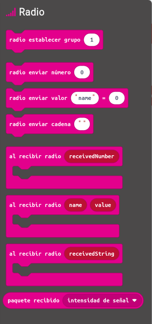

Las balizas para la señalización de obstáculos fijos (SOV) son dispositivos destinados a reducir el peligro para las aeronaves mediante la señalización de la presencia de obstáculos. Los objetos altos, fijos o móviles, deben ser señalizados cuando se encuentren en determinadas condiciones susceptibles de provocar un riesgo de colisión en las proximidades de aeropuertos y helipuertos.
Las balizas son fijas, se encuentran en el elemento que queremos señalizar (Edificio, antena, otro avión..) Y tenemos un detector de balizas en el aparato en movimiento, en este caso el avión, que produce un efecto sonoro o luminoso para avisar al piloto.
Usamos la función radio de las microbit.
Recuerda que lo más importante es que trasmitan en el mismo canal (grupo) el emisor y receptor. Y recuerda que la programación es diferente en el emisor de la señal que en el receptor.
¿Cómo seria el programa del emisor? La baliza emite una señal cada segundo
Al iniciar
Establecer grupo
Establecer intensidad
fin iniciar
Para siempre
enviar 1
Esperar 1 segundo
fin para siempre
¿Cómo serie el receptor?
Para siempre
Al recibir señal
Emite pitido
Enciende LED
fin para siempre